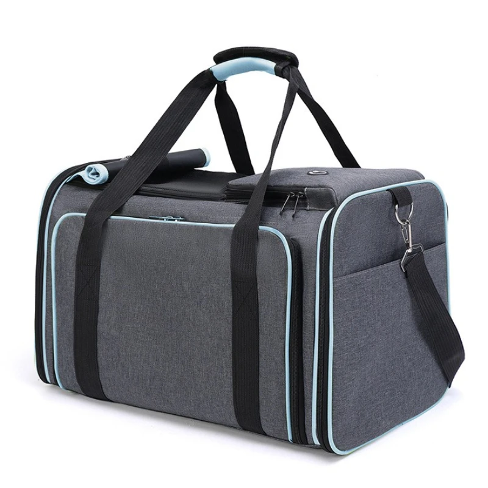
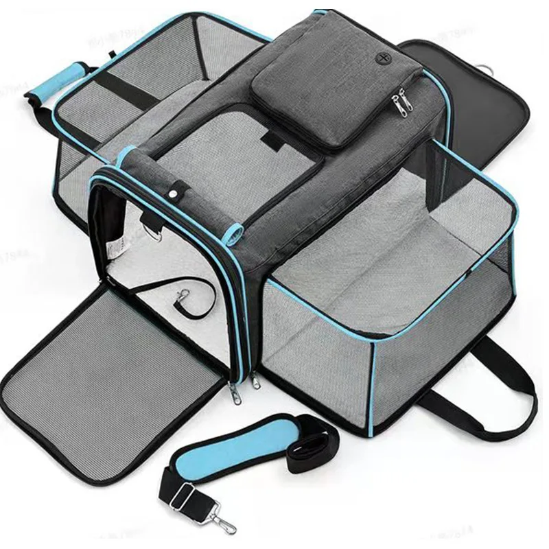
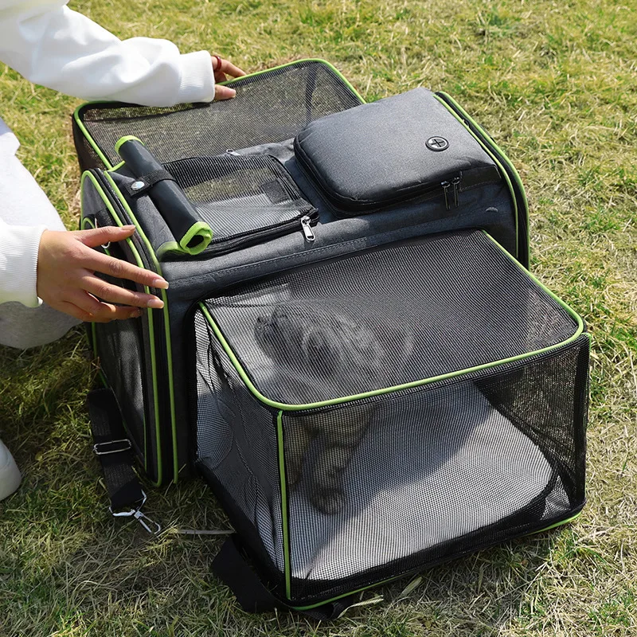
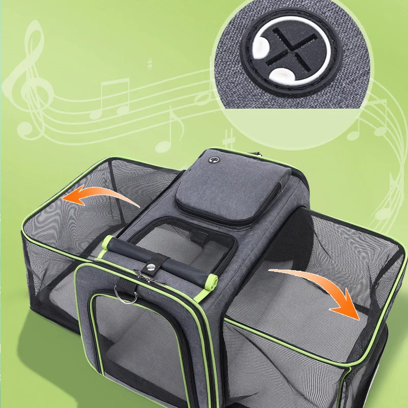
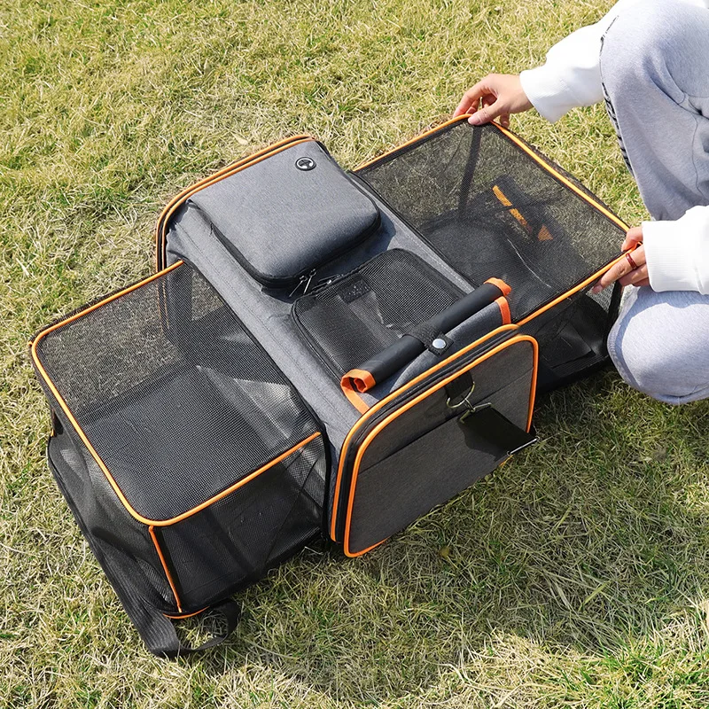
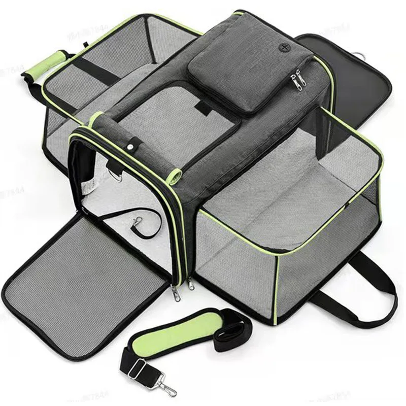
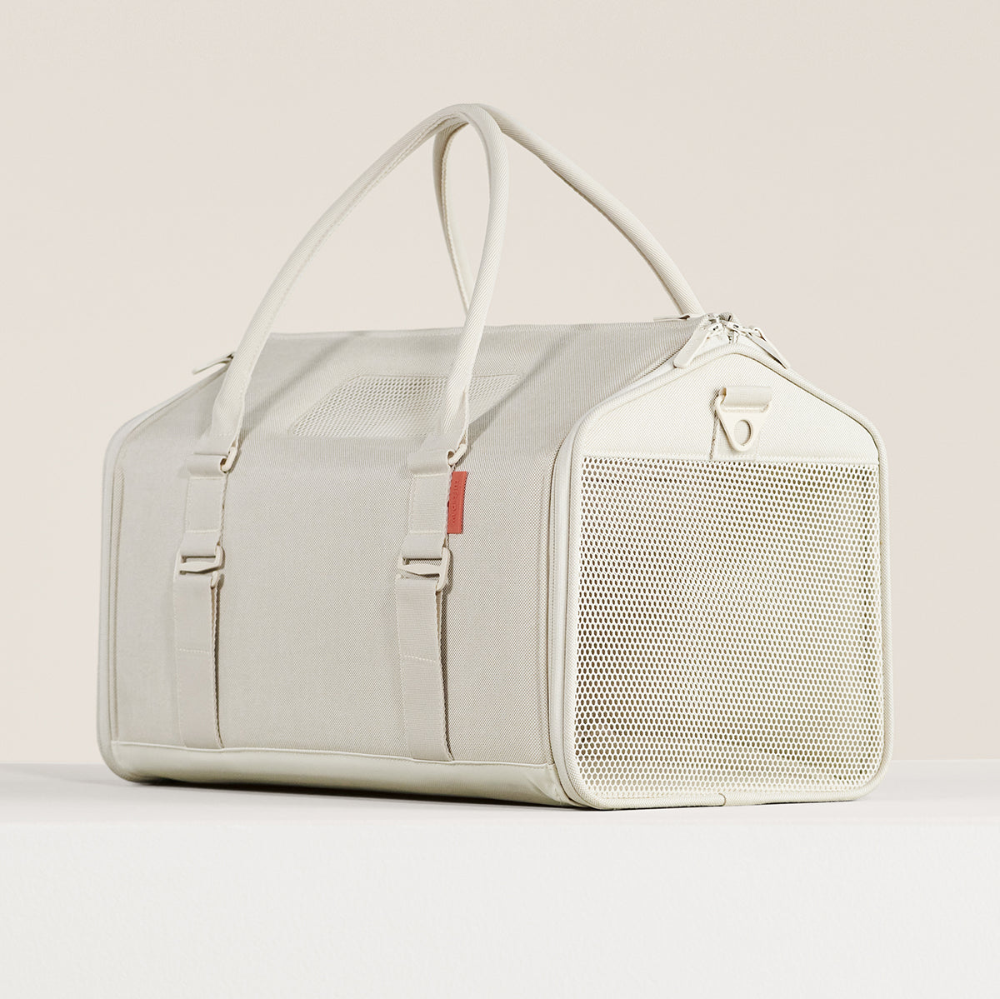

Это Stage 2 (сорсинг) департамента Product Intelligence. Stage 1 (анализ) — отдельно, его выжимка в Брифе. Внутри сорсинга — свои Этапы 0–3. Цель: товар НЕ ХУЖЕ премиум-конкурентов (Porto / ibiyaya) — равный-хороший / другой / лучше — для теста, реальный товар под дропшип-агента.
departments/product-intelligence/sourcing/workflow.md + operational-memory/learnings.md. Лаб = рабочие отчёты/данные. Все цифры/спеки — реальные с листинга или «не найдено», не выдумываем.| Фото | Что показывает | Роль |
|---|---|---|
 |
№1 · закрытый вид — сумка-дюфель, молнии, ручки + плечевой ремень | ✓ вход Alibaba форма «переноски» |
 |
№2 · раскрытый лежак — обе боковины откинуты, сетка, верх, карабин-страховка | ✓ вход Alibaba наш УНИКАЛЬНЫЙ трансформер — ключевой сигнал |
 |
№3 · верхнее окно + кот — рука открывает верх, кот внутри сквозь сетку | ✓ вход Alibaba другая грань/ближе |
 |
№4 · механизм — стрелки раскладывания + крупный план твист-замка | ✓ вход Alibaba ловит то же «железо»/конструкцию |
 |
№5 · на улице — раскрытый на траве с человеком (лайфстайл) | ✓ вход Alibaba «живой» полный кадр — другой сигнал |
 |
раскрытый лежак (зелёный) — дубль синего, другой цвет | не берём этот раз (дубль №2) |
 |
Porto-якорь (Tuft&Paw, премиум переноска→лежак) | якорь · только 0.2 Lens |
Google → компании-КОНКУРЕНТЫ + Amazon + цены (→ в Stage 1, не переписываем). Yandex → смежные категории/насмотренность. Ссылки рабочие (фото публичны). Заполним находки после твоего ОК по входам.
| Фото | Google Lens | Yandex | Находки |
|---|---|---|---|
| №1 закрытый | открыть | открыть | заполнить |
| №2 лежак (синий) | открыть | открыть | заполнить |
| №4 верх+кот | открыть | открыть | заполнить |
| Porto (якорь) | открыть | открыть | заполнить |
(а) 6 ключевых × 10 стр = 1782 уник. за 78с (requests-direct). Полные: expandable 436 · foldable-bag 410 · carrier-bag 405 · travel-outdoor 443 · large-soft 408 · backpack-expandable 153 (хвост стр 5–10 поймал кумулятивный baxia → дособеру после кулдауна, это H6-рюкзаки). (б) поиск по 5 фото = 240 (48/фото, браузер+прокси). Слито+дедуп → 1897 уник. → карта ниже.
(а) 6 ключевых × 8 стр = 1456 уник. за 181с (браузер). (б) поиск по 5 фото = 143 (поймал наш референс $31.28). Слито = 1599 уник. → карта ниже. 🔑 Тут РЕАЛЬНЫЕ продажи (= доказательство спроса): expandable carrier $11.35 2000 продано · $36.15 1000 · при рознице $30–36 берут — наш DTC $69–79 здоровый.
Решаем по факту после Alibaba+AliExpress — хватит ли, или гнаться за фабричной ценой/упаковкой. 1688 — кит. прокси, под финалистов.
Из собранного — широкий 1-й отбор галочками на карте (по ФОТО) → наша таблица отобранного. Карта-чекбоксы (механизм 1:1: автосейв + «скопировать выбранные»). 1897 уник. = 6 ключевых + поиск по 5 фото (📷 = найдено по фото).
🔑 Классификация H1–H6 — по названию (черновая группировка), НЕ по фото. Реальный отбор — твой, визуальный, по карте (картинка первична). Авто-теги только чтобы сгруппировать; ничего не выбрасываем. H2/H4 пустые (по названию не отличить — это решается глазами в H1). H6 (рюкзаки/коляски/sling) и DROP свёрнуты внизу карты — раскрой, чтобы видеть рынок смежных форм конкурентов.
📋 таблицаОтобранное H1 · Alibaba (твой ★ + мой ПОЛНЫЙ проход ＋) — 50Новые конкуренты из Google-выдачи (0.2) → отдаём в анализ Stage 1 (не переписываем его).
| Конкурент / находка | Где | Цена | Пометка |
|---|---|---|---|
| Tuft & Paw Porto (якорь) | DTC | $109 | ближайший концепт переноска→лежак |
| ibiyaya / Sleepypod / Travel Cat (якоря) | DTC | $160 / $215 / $22–274 | премиум-планка + потолок цены |
| дозаполнить из Google-выдачи (0.2) | |||
🔑 Объединил Alibaba+AliExpress → шортлист: основной + резервный поставщик + доп-товар. Покупаем с Alibaba; AliExpress = доказательство спроса. Дальше: обсудим с Marina → клик-сверка реальных цифр ТОЛЬКО у финалистов (цена · MOQ · сколько сторон · карабин · сетка+верх · жёсткое дно · S/L · ВЕС+доставка) → чистый хэндофф product-reality.md + «Часть N» в PI-отчёте.